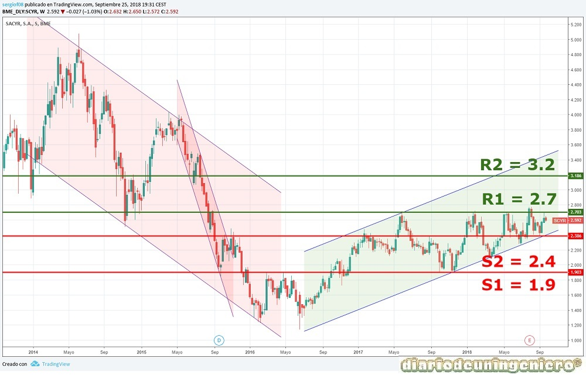
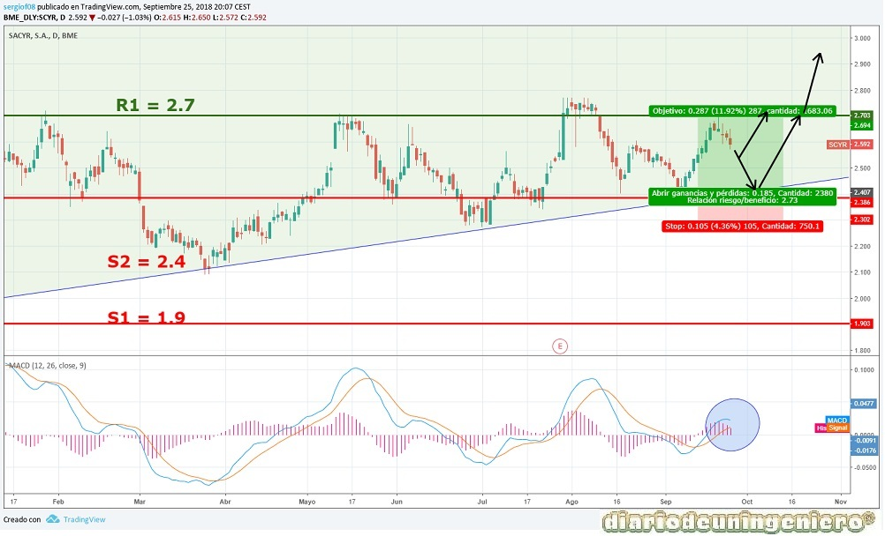

Sacyr is currently in very good health, both in projects and in financial terms. If in 2016 it suffered the worst punishment in the Spanish stock market, reducing its capitalization by half in just one year (from € 2.5 to € 1.3) due to the oil crisis, in 2017 the recovery was considered to be recovering the prices previous
It should be noted that when the oil crisis hit that would seriously hit Repsol, Sacyr had been doing really well for a year with an impeccable management. He had obtained new contracts and the Panama Canal was about to be concluded. But due to its high participation in the oil company with 10% of its shares would be unspeakable. And it is that such a large company never has to put everything in the same dish. The non-diversification of its capital could cost Sacyr a bankruptcy if it had gone to more. Luckily the game between Saudi Arabia and the USA ended and now they have turned everything with prices in maximum in 5 years bordering the $ 80 a barrel.
In 2017 it would reach two euros and begin its ascent without stopping. It would start to arouse illusion but it would stay stuck for a long time in a side channel between € 1.8 and € 2.5 without ever losing its bullish direction.
In contracts has won several and the most important are the highway of Rome with a total project amount of 12,600 million euros. The investment in the project will be about 2,600 million euros, which makes it a project with many capital gains that may be eliminating the debt and increasing the portfolio of contracts. Although the debt is no longer worrisome and is reducing year by year. This year's flagship project is the management of a waste plant in the USA that will provide revenues of close to 3,000 million during the years this operation, that is, 25 years, with an investment of some 500 million euros.
Below I present the data of fundamentals that I find most important:
| ### | 2014 | 2015 | 2016 | 2017 | 2018 |
|---|---|---|---|---|---|
| Deuda/ Caja empresa | Total Debt (M) | 7.005 | 5.113 | 5.260 | 7.360 | ## |
| Beneficio/valor acción | |||||
| Capitalization(M) | 1.437 | 939 | 1.148 | 1.257 | 1.449 |
| EBDITA (M) | 382 | 342 | 351 | 387 | 426* |
| PER | - | 11,22 | 9,06 | 6,91 | |
| Net Benefit (M) | 193,773 | 147,921 | 208,081 | 135,834 | 171,8** |
| Dividend | 27.6777 | ||||
| Profitability per share | 1,91% | ||||
| Debt/EBDITA | 15,2 | 16,3 | 13,8 | 12,5 | 11** |
If we look at the table we will see how it owns a large debt and if we do a count with the old data using the net profit of the company we can draw the conclusion that the company could not get rid of the accumulated debt in about 15 years. This is enough but being aware of the investments in projects that have been carried out in 2016 that debt could be solved in considerably less. In 2015, the debt was reduced by 2000 million compared to 2014, thanks in part to the sale of assets such as Testa for 1,800 million. With the aforementioned new contracts, the debt could be eliminated in a few years and have a fairly sustained growth, being fundamentally a very attractive company at the price quoted and knowing the current capitalization.
The table shows how in 2015 it was the year with a lower capitalization below the 1 billion mark, which caused it to descend from the IBEX35 to the Continuous market, where it continues today. Even so the previous years had accumulated a very bulky debt with possible bankruptcy risk if things were not done well and the market instead of penalizing raised the price with great speculation.
Firstly, I will show a long-term chart showing the decline that I have made since 2014, the subsequent rebound when Sacyr showed results for the first time in which the debt was down and a very ambitious strategic plan and the later fall in 2015 to minimums due to the collapse of oil that reached $ 30 and affected oil companies much like REPSOL and in general to all values.
After making double ground began its upward trend where the value would go climbing to the maximum of the IBEX35 when Macron won the election and all European indices soared. There it would reach the current resistance and today support and resistance where it is moving, in 2.7 €. From here the support of 2.5 is respecting it and the uptrend continues impeccable.

If we go to a medium-term chart we can see how the support line has touched in July and at the beginning of September again. If in the MACD, highlighted area the lines are crossed again as it seems to be back to support where it would be a good opportunity to take long positions or buy shares with target the € 2.7 and win an 11 %, if you want to put a stop would be on 2.25-2.35 .

© 2016 - All Rights Reserved - Diseñada por Sergio López Martínez
El sitio se mantiene gracias a la publicidad, por favor Desactiva Adblock para seguir navegando
He desactivado Adblock![[Valid RSS]](https://www.onepointsync.com/wp-content/uploads/2016/08/valid-rss-rogers.png "Validate my RSS feed")